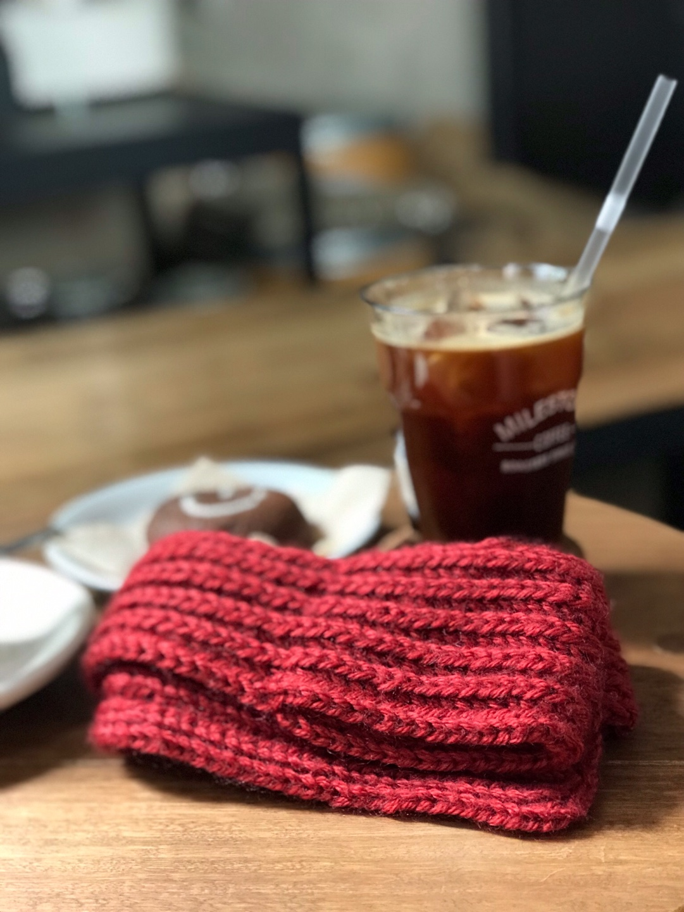
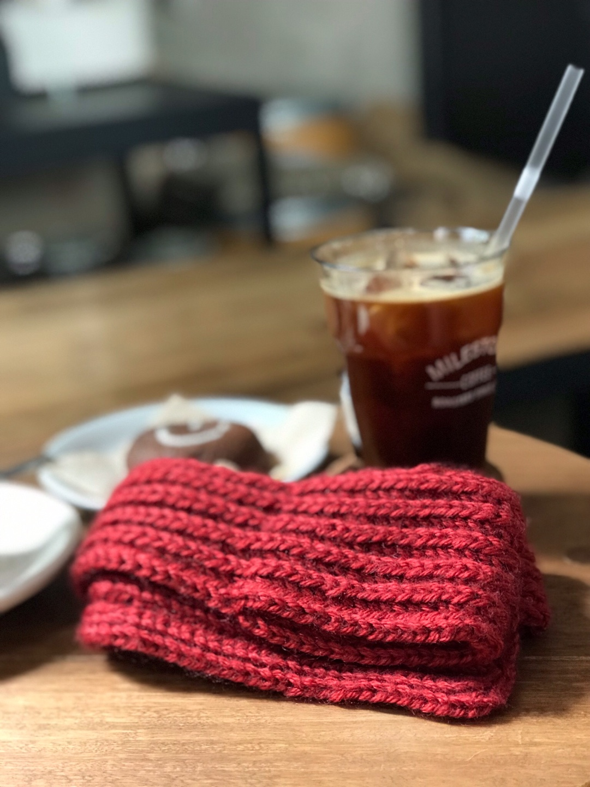
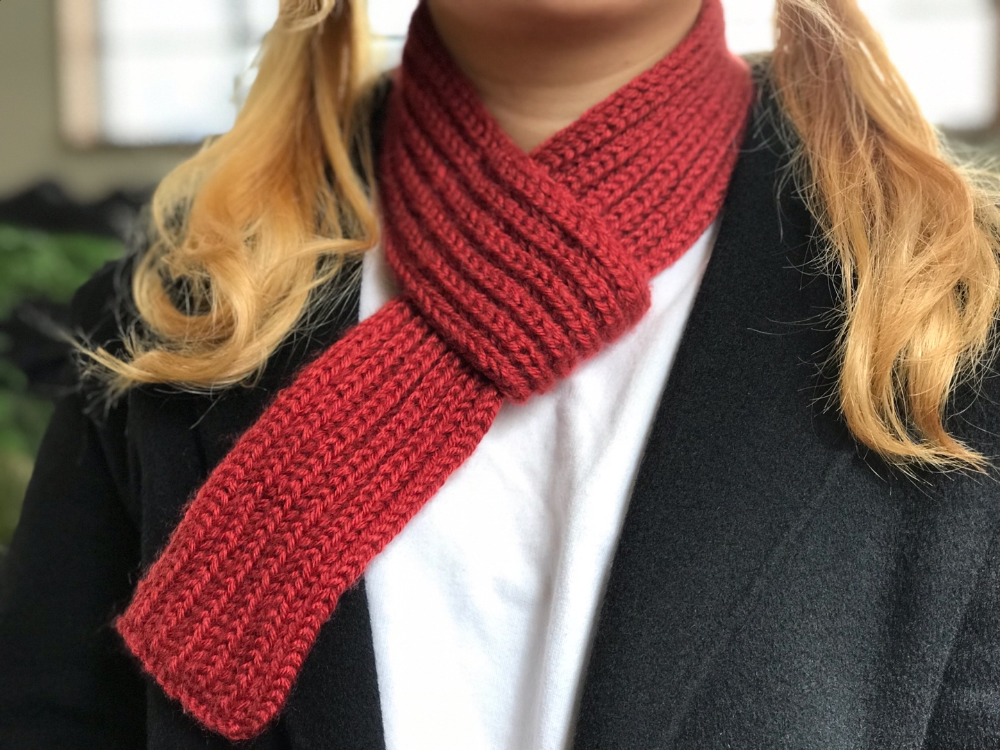
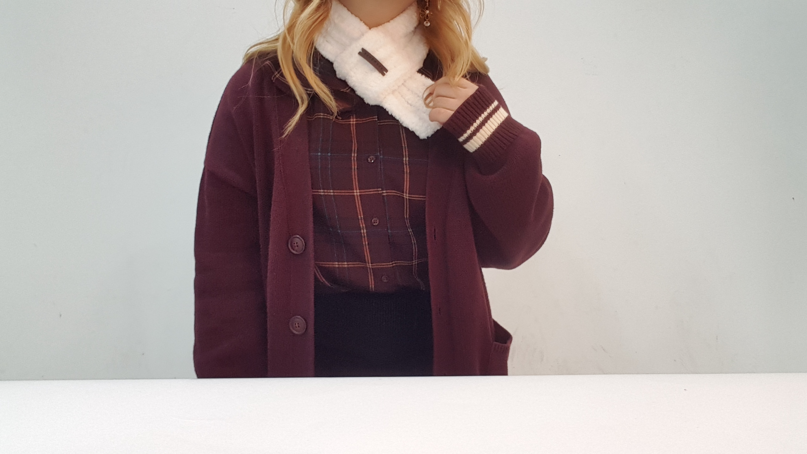

나만의 핸드메이드 쁘띠목도리
구성 용품
울믹스 뜨개실 (레드,베이지)

수면양말 뜨개실 (스노우 화이트, 아이스 블루)

대바늘 0.5mm

기타 뜨개질 용품(돗바늘, 라벨, 골무)

전체제품 사진


리뷰사진 및 후기
실제로 뜨개질을 해본결과 부지런하게 한다면 이틀정도면 쉽게 뜰 수 있는 목도리인것 같다. 그리고 털실의 종류에서 울믹스 뜨개실은 18코, 수면양말 뜨개실은 15코로 잡고 만들었는데 둘다 아예 다른 스타일의 목도리가 나와서 이걸 홍보에 넣어도 될 것 같다는 생각을 했다.


 

실착사진
 뜨개 방법에 대한 영상
기획안 보완
- 뜨개질을 위한 사용방법안내 영상제품을 추가하기로 했습니다.
- 전에 조사했던 뜨개실의 이름이 변경되어 수정했습니다.(내용물은 같음)